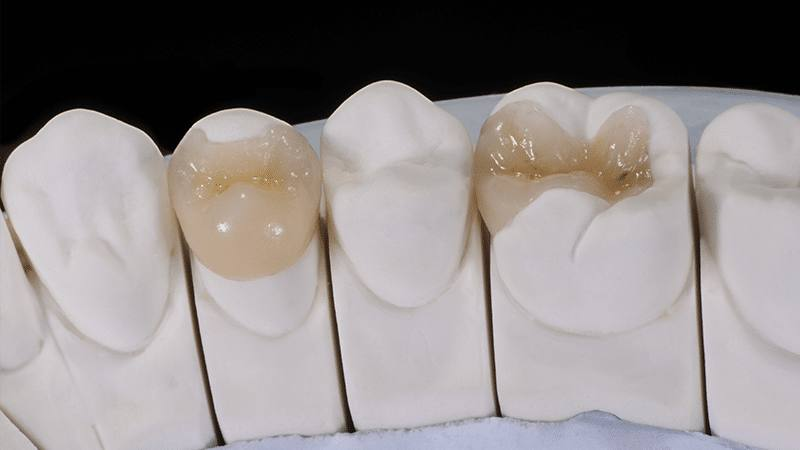
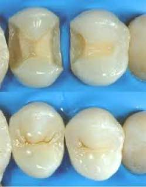
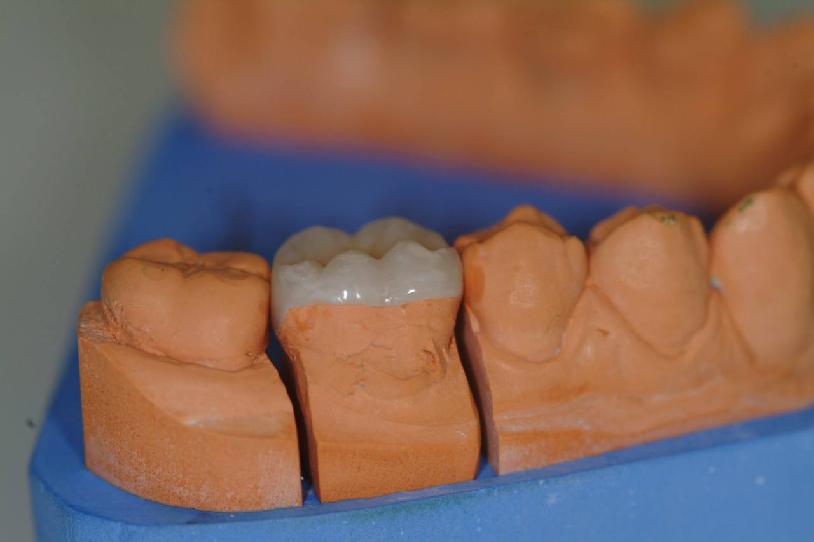

L’intarsio dentale è una ricostruzione del dente che va a sostituzione della parte di tessuto dentale, perso per carie importante o trauma. È un manufatto che viene utilizzato nell'ambito dell'estetica dentale e per il recupero funzionale. La sua funzione è la cura dei denti posteriori, ovvero i molari e i premolari.
Questa procedura è indicata quando una carie dentale profonda o un trauma dentale hanno causato una perdita di sostanza dentale tale da rendere impossibile la riparazione con una semplice otturazione in composito. Si può ricorrere all’intarsio dentale anche in caso di vecchie otturazioni in amalgama sui denti posteriori che richiedono una sostituzione..

L’uso degli intarsi dentali è comune in
odontoiatria conservativa, poiché
possono migliorare l’aspetto dei denti
danneggiati o cariati in modo
naturale. Gli intarsi possono anche
essere utilizzati per correggere
problemi di malocclusione o di forma
dei denti.
Tuttavia, a differenza della capsula,
che ricostruisce interamente la
porzione esterna (visibile) del dente,
l'intarsio ci consente di conservare la
parte sana dell'elemento dentale
senza sostituirlo totalmente.
La preparazione del dente per
l’intarsio dovrà avere angoli
arrotondati, pareti lisce e divergenti
di circa 10 gradi verso l'esterno; i
biselli saranno assenti. La riduzione a
livello occlusale, per garantire la
sufficiente resistenza del materiale ai
carichi masticatori, dovrà essere di
almeno 1,5 mm.
Esistono tre tipologie di intarsio ai denti:
L’inserimento di un intarsio dentale è
una procedura delicata e richiede
molta attenzione e precisione da
parte del dentista. L’intarsio viene
effettuato in laboratorio da un
odontotecnico.
L'intarsio viene inserito e
correttamente fissato tramite delle
tecniche di cementificazione adesiva
tramite composito o cementi
dedicati, così da escludere possibili
infiltrazioni batteriche. Il dentista poi
si occuperà di verificare il lavoro e
rifinire il dente in caso di punti di
occlusione non perfetti così da
rendere la protesi perfetta.
Gli intarsi dentali possono essere realizzati in:
Il materiale scelto dipende da diversi fattori, tra cui l'aspetto estetico, la funzionalità e il costo.
I materiali più usati per gli intarsidentali sono ceramica e composito.Sarà il dentista a valutare qualemateriale sia il più adatto allenecessità del paziente.
Mediamente sono necessarie 2 sedute di 60 minuti, la prima per la preparazione del build-up (base su cui verrà cementato l’intarsio) e la presa dell’impronta, la seconda per l'inserimento definitivo dell'intarsio.
